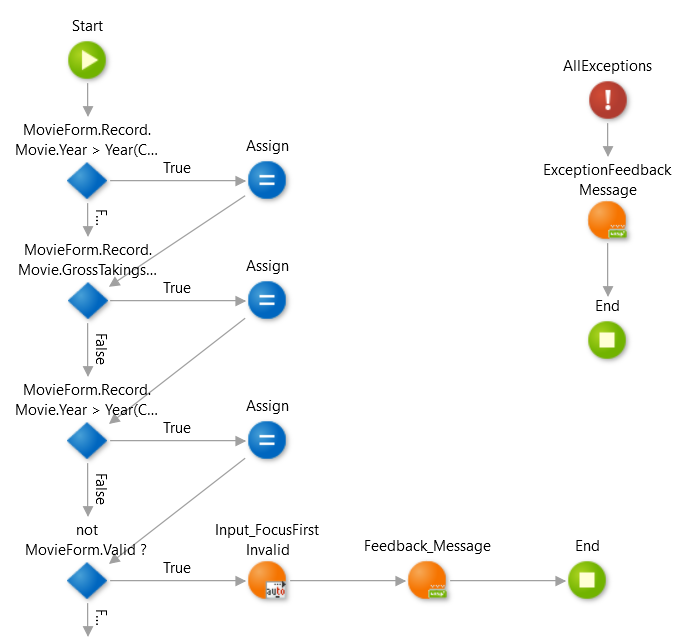

Why need this solution?¶
Usual Validation Methods¶
If you don't yet know the usual validation methods in OutSystems, the following resources may help.
Video
The usual way to validate with OutSystems is to implement the logic as follows:

You can set the properties of the widget to check the required items and the number of characters. However, there are not many validations that can be set in the widget properties. In addition, processing that does not involve a screen may be required, so logic implementation is required anyway.
Issues¶
I think there are some issues with this verification method. For example, if you want to use the implemented validation logic in other actions, you will create a common action based on the existing validation logic. The created common action is used for the original action and the newly required action. This means that a small refactoring is needed.

Also, if you now want to validate in the actions of another module, you may create a common module to keep the dependencies between the modules correct. You need to pay attention to the relationship between the modules. These are a bit of a hassle.
In addition, there is no way to share client-side and server-side validation.
Why need this solution ?¶
This solution should help you solve the problems mentioned above. I hope it helps projects that are aware of the same issue.